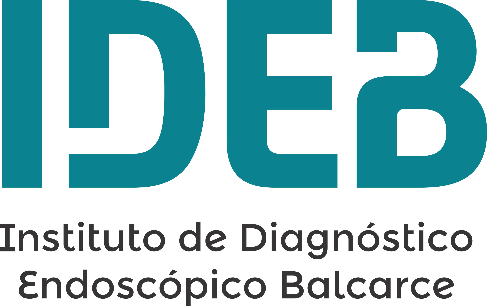
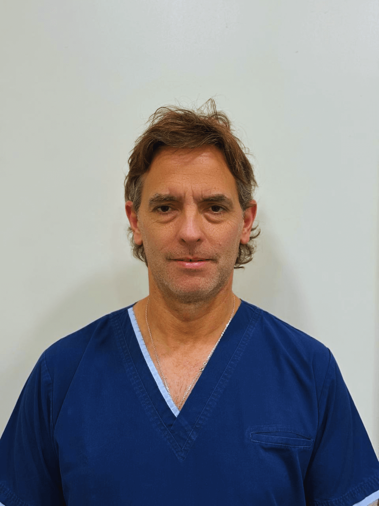
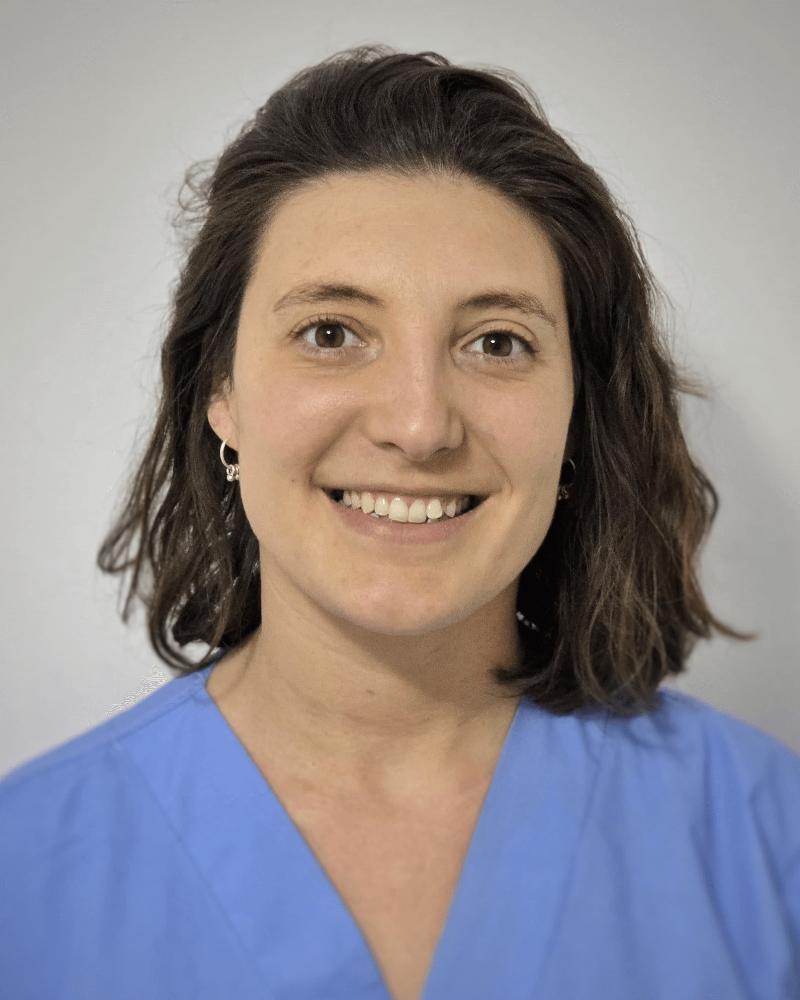
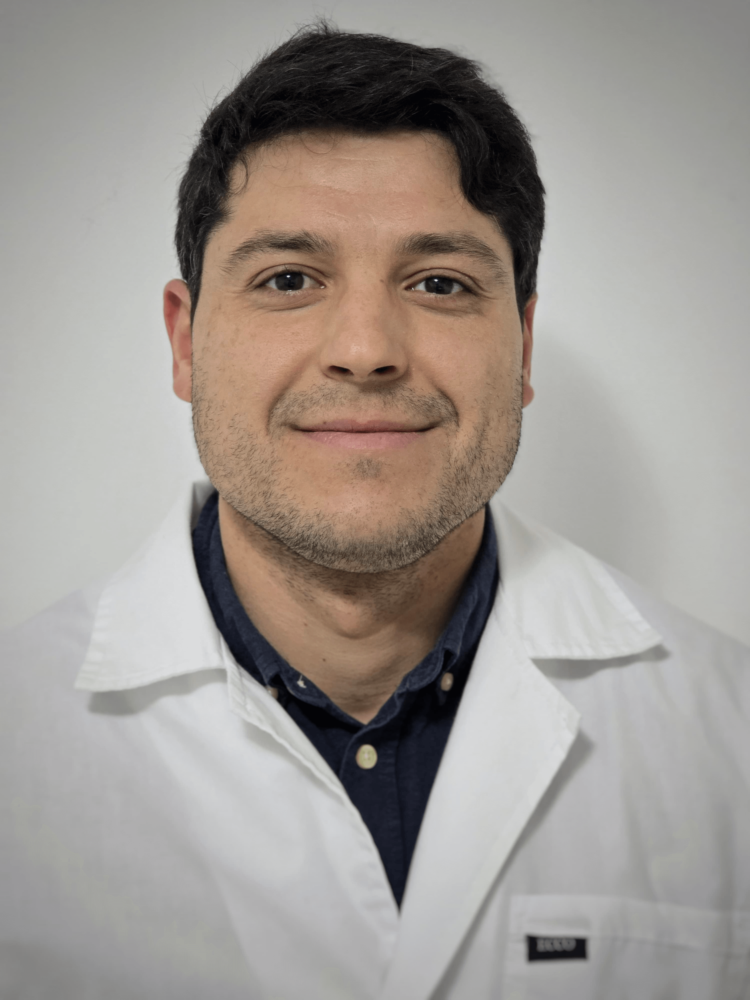

Ubicación
Estamos en Balcarce
Calle 17 N°832, Balcarce, Buenos Aires.
📍 Calle 17 N°832, Balcarce, Buenos Aires

Centro especializado en salud digestiva
Atención médica especializada con tecnología de alta definición, equipo profesional y un enfoque centrado en cada paciente.

Quiénes somos
En IDEB brindamos un servicio integral para el diagnóstico, seguimiento y prevención de enfermedades digestivas, combinando tecnología avanzada, experiencia médica y atención personalizada.
Nuestro compromiso es ofrecer una experiencia médica clara, profesional y confiable para cada paciente.
Dirección médica
Director del instituto y profesional con experiencia en diagnóstico digestivo, procedimientos endoscópicos y atención integral del paciente.
Servicios médicos
Realizamos prácticas diagnósticas y terapéuticas orientadas al cuidado de la salud digestiva.
Evaluación del esófago, estómago y duodeno.
Exploración integral del colon.
Procedimiento terapéutico endoscópico.
Detección de intolerancias y SIBO.
Información para pacientes
Accedé a indicaciones y documentos necesarios antes de tu estudio.
Equipo profesional
Un equipo interdisciplinario dedicado a brindar atención segura, clara y profesional.

Dr. Gonzalo Viera

Dra. Melisa Hidalgo

Dr. José Balsamo
María Valle
Mercedes Marzano
Natalia Montenegro
Ubicación
Calle 17 N°832, Balcarce, Buenos Aires.
Horarios
Preguntas frecuentes
Respondemos algunas de las consultas más habituales antes de solicitar un turno.
Dependerá del tipo de práctica y de la cobertura médica. Si tenés dudas, podés consultarnos antes de solicitar tu turno.
Sí, trabajamos con distintas obras sociales y también atendemos pacientes particulares.
Podés descargarlas desde la sección de documentación o solicitarlas directamente por WhatsApp.
En algunos procedimientos con sedación sí, por lo que te recomendamos consultarlo previamente según el estudio indicado.
Contacto
Estamos para ayudarte con turnos, estudios e indicaciones previas.